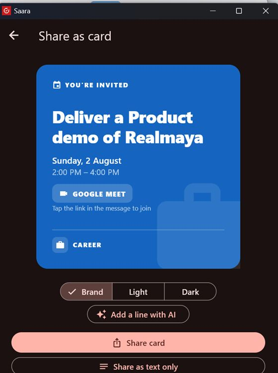

Turn a commitment into a beautiful invite, send your reports, or bring in the people your word is for.
Share as a card
From any task or event, tap Share as card. Saara makes a branded card themed to the item's area:
Pick a style — Brand, Light or Dark.
Optionally Add a line with AI — one warm line, written for you (text only).
Share card (image + tappable details) or Share as text only — on WhatsApp, Gmail, anywhere.

Share as card — invite anyone, on any app.
Only what's needed is shared. The card carries the title, time, place and links — your notes, captures and scores never leave your device.
Reports
Event report — after running an agenda: Share report (text) or Export as file (a re-importable Markdown file).
Committed-listener report — Preview & send to WhatsApp, Gmail, clipboard, or any app.
Export all my data (Settings) — a .zip of every task, area and capture, wherever you choose to put it. See Settings & privacy.
Committed listeners
Integrity is relational — a promise isn't fully kept until it lands with the person you gave it to. Add a committed listener (with their consent), choose how reports reach them (WhatsApp / email / share sheet), the scope (all areas or one), and how often. Each period they rate how reliably you kept your word, and Saara compares it to your own score and suggests where to close the gap.